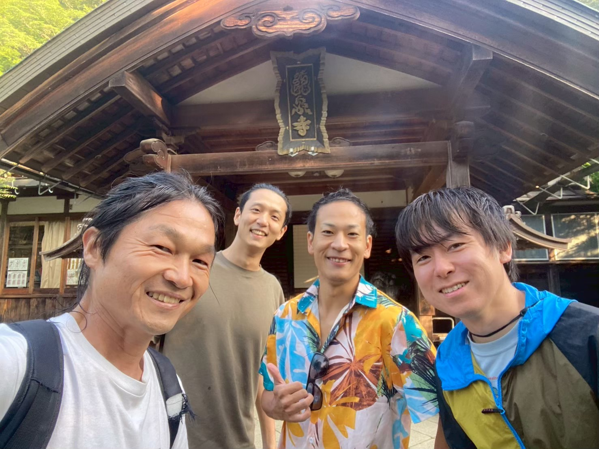
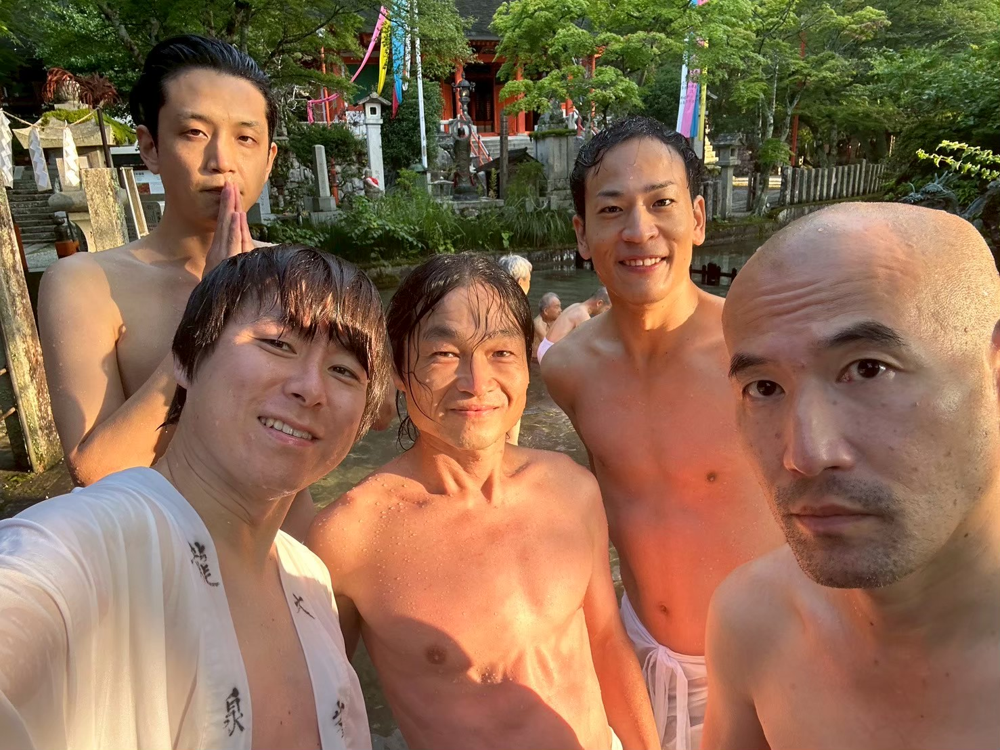
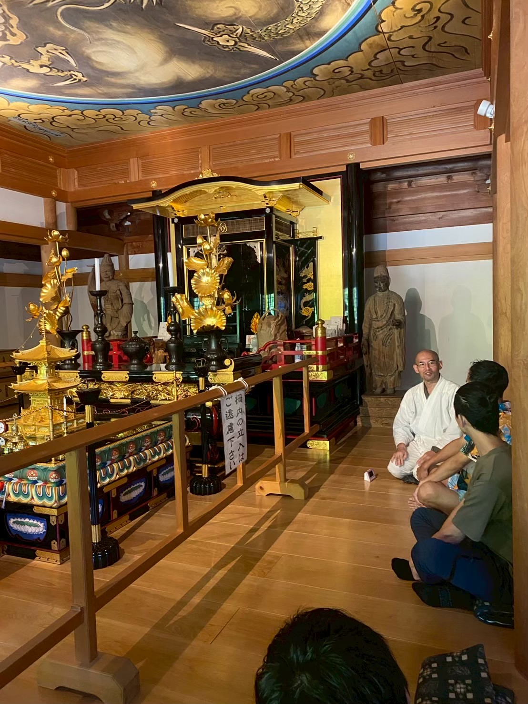
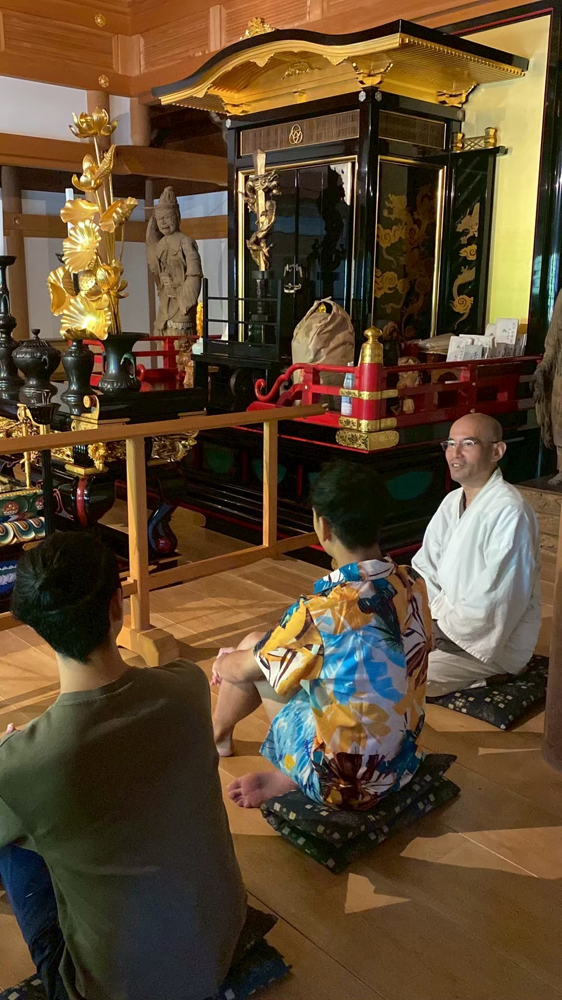
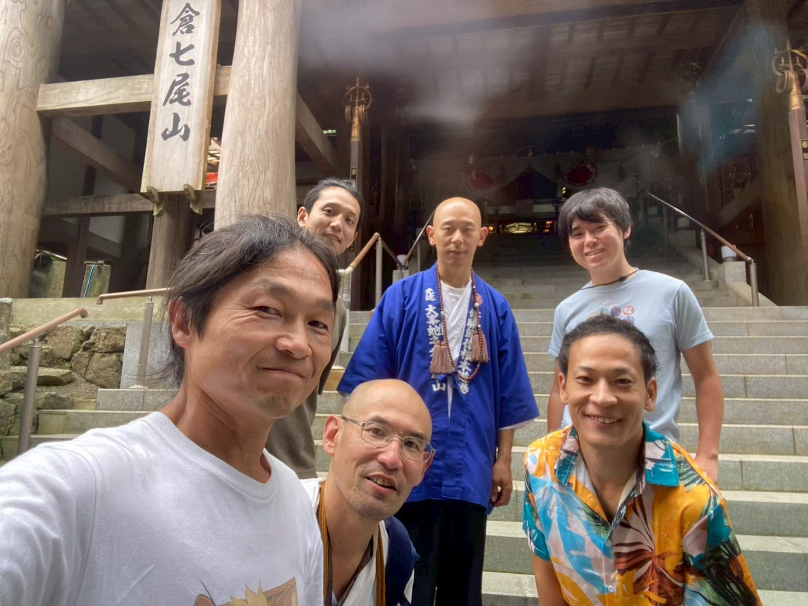
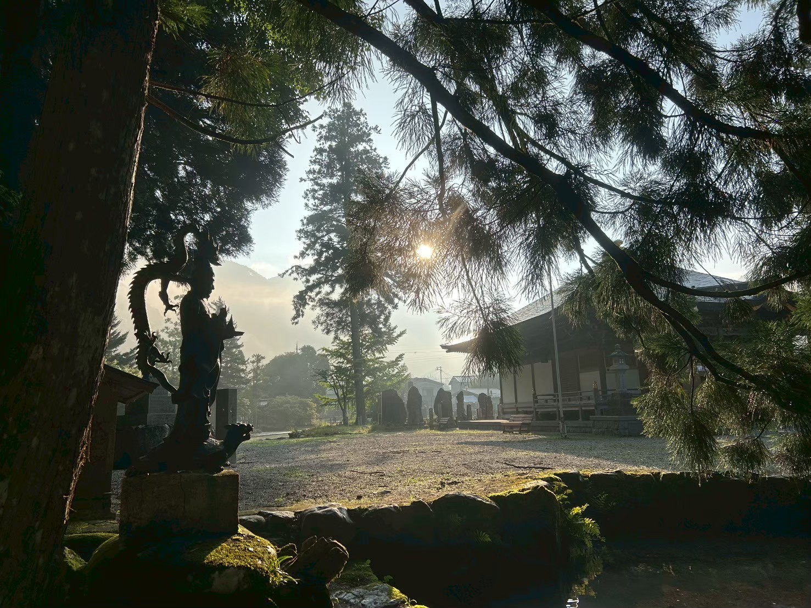

この二日間が、天川村での座禅会のはじまりでした。龍泉寺の境内に朝の光が差し、杉のあいだから山の霧が見えていました。
まだ「何回目」も「次回」もなく、ただ、集まった人たちがいて、この土地があって、ご住職がいた。それだけの二日間です。

龍泉寺の池に入りました。行衣を身につけて、あるいはそのまま、冷たい水に身体を沈める。背景には社殿と、風に揺れる五色の幡がありました。
頭で考えていたことが、水の冷たさで一度止まります。そこからしか始まらないものがあります。

本堂では、天井に龍の絵が描かれた空間で、ご住職を囲んで坐り、お話を伺いました。
「うまく坐ること」より、「静けさの中で何が起きるか」に開かれていく。この日の空気が、いまも座禅会の芯として残っています。


二日目は、蛇之倉七尾山へ。山頂の社と洞窟、そして修験道場での瞑想。この回だけの場所です。
祈りと修行が積み重なってきた場所に、身体ごと入っていく。そこで自分の呼吸の音だけが残る時間がありました。


この回のあと、参加された方に5つの質問をお送りしました。そのお答えの一部です。
この二日間のあと、座禅会は月に一度のペースで続いてきました。洞窟に入れない日もあり、参加者が集まらない日もあり、それでも場は開かれ続けています。
この日にこの言葉が出たことを、記録として残しておきます。ここが、はじまりでした。
あの日の感覚を思い出したいとき、
またここへ戻ってきてください。